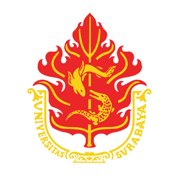

|

|
Jl. Raya Kalirungkut, Surabaya, East Java, Postal : 60293

|
Prolog
I achieve my bachelor degree at this University, Universitas Surabaya (UBAYA). I learn about
Telecommunication and
Network Design which focused on computer network and cellular network. Beside of that, I also learning about
basic electrical engineering such as basic electronics, electronic circuit, microcontroller, machine learning,
and control system.
Experience & Organization
-
Electrical Engineering Study Group (2017-2020)
- Organizing and planning welcome party for new members
- Organizing and planning external workshop related to basic electronic for non Electrical Engineering
Students
-
Startup Festival Competition (2018)
- 3rd place on "Festival Start-Up Elektronika" Category: Consumer Electronic
-
MEGACON-UBAYA (2018-2019)
- Working as Deputy Chairman, control and monitoring security and publication division
- Assisting Chairman jobdesc when chairman is away
|
-
KOMURINDO-KOMBAT Competition (2018-2019)
-
Participant of KOMUIRNDO Competition 2019
-
Interest Group (2018-2020)
- Developing and Coordinating the implementation of "Jam Digital" in Engineering Department
of Universitas Surabaya
-
Electrical Engineering Student Employee (2019)
-
Handling basic administration tasks such as coordinating files, make meeting minutes, documenting
paperwork into digital files.
-
Assisting Head of Laboratory to manage 2 laboratories and providing Electrical Engineering lab set
tutorial for external departement.
|